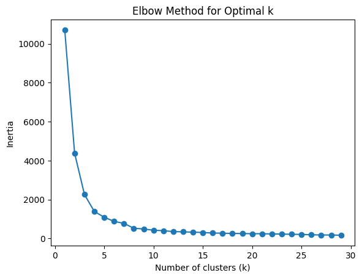
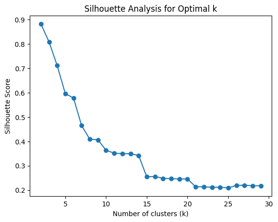
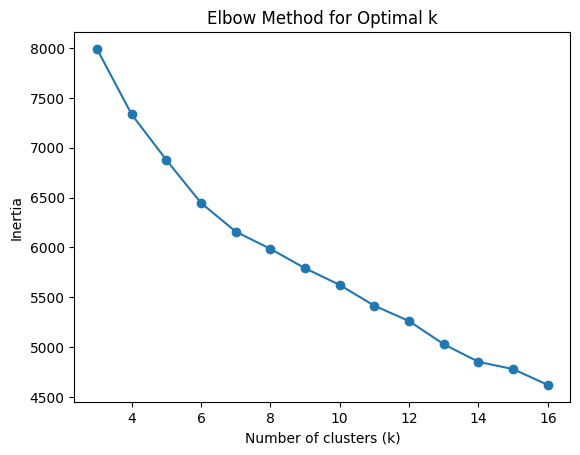
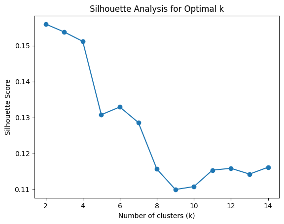
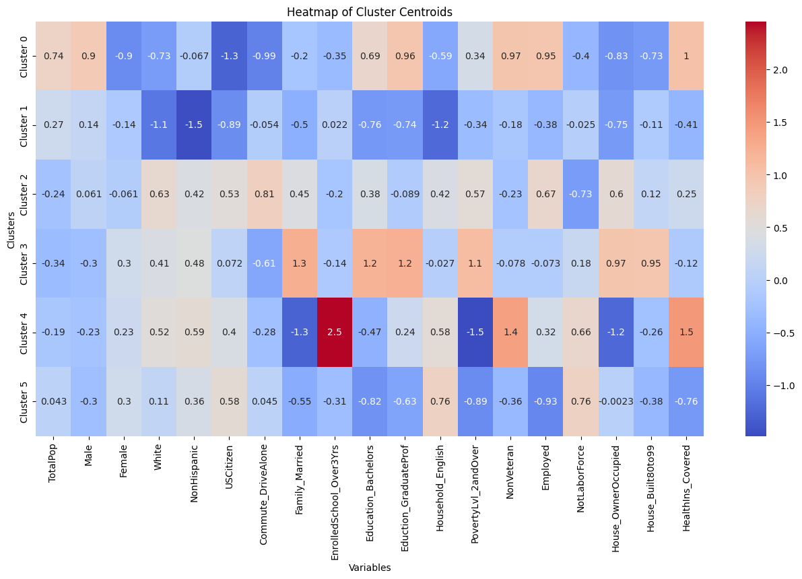
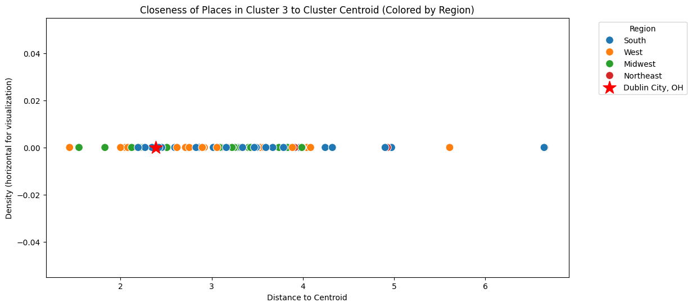

Data-Driven Dublin · the code
How we coded the clustering
This is the Python notebook from our first round of k-means clustering, shown the way it ran in Google Colab. You can read every step, from loading the Census data to finding the group of places that holds Dublin.
About this notebook
The notebook runs k-means two ways: once on raw counts and once on percentages of each place's population. It was our first pass at the question. The final model on our dashboard came later. That model added park, climate, and housing cost data, so its list of 51 places is not in this notebook.
Notes from our team sit beside a gray line. Code is in the dark panels, and each output appears right below its code. The numbered headings were added for this page.
Load the data
Download the SQLite database that our pipeline built, then read the census table and the list of place names.
Import Step
import requests
import sqlite3
import pandas as pd
import numpy as np
import matplotlib.pyplot as plt
import seaborn as sns
from sklearn.preprocessing import StandardScaler
from sklearn.cluster import KMeans
from scipy.spatial.distance import euclidean
from sklearn.metrics import silhouette_score# URL of the .db file hosted on GitHub
db_url = "https://raw.githubusercontent.com/brutus-the-homeschooler/Capstone/main/Database/acsse_2022.db"
# Download the .db file
response = requests.get(db_url)
# Save the .db file locally
with open("acsse_2022.db", "wb") as db_file:
db_file.write(response.content)
# Connect to the SQLite database
conn = sqlite3.connect('acsse_2022.db')
# Query the 'census_data' table
census_data_df = pd.read_sql_query("SELECT * FROM census_data", conn)
# Query the 'place_dictionary' table
place_dict_df = pd.read_sql_query("SELECT * FROM place_dictionary", conn)
# Query the 'state_dictionary' table
#state_dict_df = pd.read_sql_query("SELECT * FROM state_dictionary", conn)
# Query the 'variable_dictionary' table
#variable_dict_df = pd.read_sql_query("SELECT * FROM variable_dictionary", conn)
# Close the connection
conn.close()Keep places with reliable estimates
Choose the 19 measures, then keep only the places where the Census estimates are precise enough to trust.
Filter Variables
Based upon prior analysis, these 19 variables have been selected as reliable and interesting to study for the basis of this analysis.
# Define filter variables for estimates (ending with 'E')
filter_variables = [
"K200101_001E", "K200101_002E", "K200101_003E", "K200201_002E", "K200301_002E",
"K200501_002E", "K200801_002E", "K200901_003E", "K201401_002E", "K201501_007E",
"K201501_008E", "K201601_002E", "K201702_006E", "K202101_006E", "K202301_004E",
"K202301_007E", "K202502_002E", "K202505_004E", "K202701_006E"
]Find reliable places
This code block takes the variables listed above and calculates the coefficient of variation based on the measurement value and the measurement of error, both of which are provided within the dataset.
# Step 1: Find columns in census_data_df that match filter_variables for 'E' and their corresponding 'M'
estimate_cols = [col for col in census_data_df.columns if col in filter_variables]
moe_cols = [col[:-1] + 'M' for col in estimate_cols]
# Step 2: Calculate all CVs at once and store in new columns
for est_col, moe_col in zip(estimate_cols, moe_cols):
if moe_col in census_data_df.columns:
var_base = est_col[:-1]
# Calculate CV for each row and add it as a separate column
census_data_df[f'{var_base}_CV'] = (abs(census_data_df[moe_col]) / (1.645 * census_data_df[est_col])) * 100
# Step 3: Select CV columns and count how many have CV < 15 for each place-state pair
cv_columns = [col for col in census_data_df.columns if col.endswith('_CV')]
cv_data = census_data_df[['place', 'state'] + cv_columns].copy()
# Step 4: Group by 'place' and 'state' and count how many variables have a CV < 15 for each pair
cv_counts = (
cv_data.melt(id_vars=['place', 'state'], value_vars=cv_columns, var_name='Variable', value_name='CV')
.query('CV < 15')
.groupby(['place', 'state'])
.size()
.reset_index(name='Count')
)
# Filter to rows where count of variables with CV < 15 is greater than 18
filtered_result_df = cv_counts[cv_counts['Count'] > 18]
# Step 5: Filter census_data_df based on filtered_result_df and select only the desired columns
filtered_census_data_df = census_data_df.merge(
filtered_result_df[['place', 'state']].drop_duplicates(),
on=['place', 'state'],
how='inner'
)[['place', 'state'] + filter_variables]Version 1: raw counts
Scale the data, test different numbers of groups, and find the group that holds Dublin. In this version, Dublin landed in a group of 66 places.
Make a backup just in case
data = filtered_census_data_df.copy()Scale the data
# Identify columns ending with 'E' for scaling
columns_to_scale = [col for col in data.columns if col.endswith('E')]
# Separate the identifier columns (place and state) and the columns to scale
data_identifiers = data[['place', 'state']]
data_to_scale = data[columns_to_scale]
# Scale the data
scaler = StandardScaler()
data_scaled_df = pd.DataFrame(scaler.fit_transform(data_to_scale), columns=columns_to_scale, index=data.index)
# Combine scaled columns with the identifiers (place and state)
data_final = pd.concat([data_identifiers, data_scaled_df], axis=1)Find optimal # for k
# Define range for number of clusters to test
K_range = range(1, 30)
# Calculate inertia for each k in the range
inertia = [KMeans(n_clusters=k, random_state=0).fit(data_scaled_df).inertia_ for k in K_range]
# Plot the Elbow Curve
plt.plot(K_range, inertia, marker='o')
plt.xlabel('Number of clusters (k)')
plt.ylabel('Inertia')
plt.title('Elbow Method for Optimal k')
plt.show()
We see the elbow starts between 8-12.
# Define range for number of clusters to test
K_range = range(2, 30)
# Calculate silhouette scores for each k in the range
silhouette_scores = [
silhouette_score(data_scaled_df, KMeans(n_clusters=k, random_state=0).fit_predict(data_scaled_df))
for k in K_range
]
# Plot silhouette scores
plt.plot(K_range, silhouette_scores, marker='o')
plt.xlabel('Number of clusters (k)')
plt.ylabel('Silhouette Score')
plt.title('Silhouette Analysis for Optimal k')
plt.show()
The silhouette analysis shows that the silhouette score declines sharply between k = 3 and k = 6, but it stabilizes somewhat around k = 8 to k = 10, supporting that k = 10 could be a reasonable choice for clustering
# Fit KMeans model with the chosen number of clusters
k_optimal = 10 # Replace with the chosen optimal number of clusters
kmeans = KMeans(n_clusters=k_optimal, random_state=0)
data_final['Cluster'] = kmeans.fit_predict(data_final)# Find Dublin's cluster
Dublin_cluster = data_final[(data_final['state'] == '39') &
(data_final['place'] == '22694')]['Cluster'].values[0]
print("Cluster for Dublin, Ohio:")
print(Dublin_cluster)
# Filter for rows where state is 39, which is Ohio
state_39_clusters = data_final[data_final['state'] == '39']
# Count the number of entries in each cluster for state 39
cluster_counts_state_39 = state_39_clusters['Cluster'].value_counts().sort_index()
print("\nCluster counts for Ohio:")
print(cluster_counts_state_39)
# Count the number of entries in each cluster overall
overall_cluster_counts = data_final['Cluster'].value_counts().sort_index()
print("\nOverall cluster counts:")
print(overall_cluster_counts)Cluster for Dublin, Ohio: 0 Cluster counts for Ohio: Cluster 0 1 1 1 3 2 5 1 6 1 7 3 9 1 Name: count, dtype: int64 Overall cluster counts: Cluster 0 66 1 39 2 50 3 73 4 48 5 56 6 62 7 76 8 49 9 45 Name: count, dtype: int64
Cluster for Dublin, Ohio: 0
Cluster counts for Ohio: Cluster 0 1 1 1 3 2 5 1 6 1 7 3 9 1 Name: count, dtype: int64
Overall cluster counts: Cluster 0 66 1 39 2 50 3 73 4 48 5 56 6 62 7 76 8 49 9 45 Name: count, dtype: int64
We find that Dublin is in Cluster 0 along with 65 other places. Through the k-means clustering, we are able to bring down the possible sister cities to 65.
Where Dublin's group is
Add state, division, and region names, then count where the places in Dublin's group are located.
Analyze Dublin's Cluster
# Regions are based off of those at
# https://www2.census.gov/geo/pdfs/maps-data/maps/reference/us_regdiv.pdf
# Create a dictionary to map states to divisions
states_to_division = {
'Connecticut':'New England','Maine':'New England','Massachusetts':'New England',
'New Hampshire':'New England','Rhode Island':'New England','Vermont':'New England',
'New Jersey': 'Middle Atlantic', 'Pennsylvania': 'Middle Atlantic','New York' : 'Middle Atlantic',
'Indiana': 'East North Central','Illinois': 'East North Central' ,'Michigan': 'East North Central',
'Ohio': 'East North Central','Wisconsin': 'East North Central',
'Iowa' :'West North Central','Nebraska' :'West North Central','Kansas' :'West North Central',
'North Dakota' :'West North Central','Minnesota' :'West North Central' ,'South Dakota' :'West North Central',
'Missouri':'West North Central',
'Delaware' :'South Atlantic', 'District of Columbia' :'South Atlantic',
'Florida' :'South Atlantic','Georgia' :'South Atlantic','Maryland' :'South Atlantic',
'North Carolina' :'South Atlantic','South Carolina' :'South Atlantic',
'Virginia' :'South Atlantic','West Virginia' :'South Atlantic',
'Alabama': 'East South Central','Kentucky': 'East South Central',
'Mississippi': 'East South Central','Tennessee': 'East South Central',
'Arkansas': 'West South Central', 'Louisiana': 'West South Central',
'Oklahoma':'West South Central','Texas':'West South Central',
'Arizona': 'Mountain', 'Colorado': 'Mountain','Idaho': 'Mountain', 'New Mexico': 'Mountain',
'Montana': 'Mountain', 'Utah': 'Mountain','Nevada': 'Mountain','Wyoming': 'Mountain',
'Washington': 'Pacific', 'Oregon': 'Pacific', 'California': 'Pacific','Alaska': 'Pacific', 'Hawaii': 'Pacific'}
division_to_region = {
'New England':'Northeast','Middle Atlantic':'Northeast',
'East North Central': 'Midwest', 'West North Central': 'Midwest',
'South Atlantic': 'South', 'East South Central': 'South', 'West South Central': 'South',
'Mountain': 'West', 'Pacific': 'West'}# Merge place information into data_final
filtered_census_data_df = data_final.merge(
place_dict_df[['place', 'state', 'City Name', 'State_Name']],
on=['place', 'state'],
how='inner'
)
# Map states to divisions and divisions to regions
filtered_census_data_df['Division'] = filtered_census_data_df['State_Name'].map(states_to_division)
filtered_census_data_df['Region'] = filtered_census_data_df['Division'].map(division_to_region)
# Identify the target cluster for state = 39 and place = 22694
target_cluster = filtered_census_data_df[
(filtered_census_data_df['state'] == '39') &
(filtered_census_data_df['place'] == '22694')
]['Cluster'].values[0]
# Filter for rows with the same cluster value
cluster_subset = filtered_census_data_df[filtered_census_data_df['Cluster'] == target_cluster]
# Group by State_Name, Region, and Division, and count occurrences
grouped_counts = {
group_by: cluster_subset.groupby(group_by).size().reset_index(name='Count')
for group_by in ['State_Name', 'Region', 'Division']
}
# Access individual group count DataFrames
counts_by_state = grouped_counts['State_Name']
counts_by_region = grouped_counts['Region']
counts_by_division = grouped_counts['Division']
# Display the result
print("Counts by State:")
print(counts_by_state)
print("\nCounts by Division:")
print(counts_by_division)
print("\nCounts by Region:")
print(counts_by_region)Counts by State:
State_Name Count
0 Alabama 1
1 Arizona 4
2 Arkansas 2
3 California 12
4 Colorado 1
5 Florida 3
6 Georgia 1
7 Hawaii 1
8 Illinois 2
9 Indiana 3
10 Iowa 1
11 Maryland 2
12 Massachusetts 3
13 Michigan 2
14 Nebraska 1
15 Nevada 1
16 North Carolina 4
17 North Dakota 1
18 Ohio 1
19 Oklahoma 1
20 Oregon 1
21 Tennessee 2
22 Texas 10
23 Utah 1
24 Virginia 1
25 Washington 2
26 Wisconsin 2
Counts by Division:
Division Count
0 East North Central 10
1 East South Central 3
2 Mountain 7
3 New England 3
4 Pacific 16
5 South Atlantic 11
6 West North Central 3
7 West South Central 13
Counts by Region:
Region Count
0 Midwest 13
1 Northeast 3
2 South 27
3 West 23Version 2: percentages
Repeat the clustering with each measure written as a percentage of the place's total population. In this version, Dublin landed in a group of 92 places.
Below is the same k-means clustering based on the survey data where the values are the percentage compared to the total population variable. For example .487 for Male means the population is 48.7% Male.
# Import the CSV file into a DataFrame
census_clean_df = pd.read_csv('/content/CensusData_Clean.csv')
# Preview the first few rows of the DataFrame
#print(census_clean_df.head())# Identify columns ending with 'E' for scaling
columns_to_scale_2 = [col for col in census_clean_df.columns if col not in ['place', 'state']]
# Separate the identifier columns ('place' and 'state') and the columns to scale
data_identifiers_2 = census_clean_df[['place', 'state']]
data_to_scale_2 = census_clean_df[columns_to_scale_2]
# Scale the data
scaler = StandardScaler()
data_scaled_df_2 = pd.DataFrame(scaler.fit_transform(data_to_scale_2), columns=columns_to_scale_2, index=census_clean_df.index)
# Combine scaled columns with the identifiers (place and state)
data_final_2 = pd.concat([data_identifiers_2, data_scaled_df_2], axis=1)# Define range for number of clusters to test
K_range = range(3,17)
# Calculate inertia for each k in the range
inertia = [KMeans(n_clusters=k, random_state=0).fit(data_scaled_df_2).inertia_ for k in K_range]
# Plot the Elbow Curve
plt.plot(K_range, inertia, marker='o')
plt.xlabel('Number of clusters (k)')
plt.ylabel('Inertia')
plt.title('Elbow Method for Optimal k')
plt.show()
# Define range for number of clusters to test
K_range = range(2, 15)
# Calculate silhouette scores for each k in the range
silhouette_scores = [
silhouette_score(data_scaled_df_2, KMeans(n_clusters=k, random_state=0).fit_predict(data_scaled_df_2))
for k in K_range
]
# Plot silhouette scores
plt.plot(K_range, silhouette_scores, marker='o')
plt.xlabel('Number of clusters (k)')
plt.ylabel('Silhouette Score')
plt.title('Silhouette Analysis for Optimal k')
plt.show()
# Drop non-numeric columns
data_numeric = data_final_2.drop(columns=['place', 'state'])np.random.seed(250)
k_optimal =6 # Replace with the chosen optimal number of clusters
kmeans = KMeans(n_clusters=k_optimal, random_state=250)
# Fit and predict clusters
clusters = kmeans.fit_predict(data_numeric)
# Add the cluster assignments back to the numeric DataFrame
data_numeric['Cluster'] = clusters# Add 'place' and 'state' back to the DataFrame
data_final_2 = pd.concat([data_final_2[['place', 'state']], data_numeric], axis=1)
# View the final DataFrame with clusters
print(data_final_2.head())place state TotalPop Male Female White \ 0 Auburn city Alabama -0.325401 -0.234156 0.234156 0.579360 1 Birmingham city Alabama 0.094120 -1.449736 1.449736 -1.844139 2 Dothan city Alabama -0.359603 -1.020961 1.020961 0.070197 3 Hoover city Alabama -0.280623 -0.702540 0.702540 0.829736 4 Huntsville city Alabama 0.187909 0.307341 -0.307341 0.070966 NonHispanic USCitizen Commute_DriveAlone Family_Married ... \ 0 0.900989 0.168476 0.721837 -0.691961 ... 1 1.021659 0.820438 0.030834 -2.229599 ... 2 0.918836 1.032370 0.979756 -0.683772 ... 3 0.844354 0.761495 0.849168 1.254567 ... 4 0.844248 0.906841 1.140459 -0.257965 ... Eduction_GraduateProf Household_English PovertyLvl_2andOver NonVeteran \ 0 0.625577 0.516186 -1.197631 0.977014 1 -0.778347 1.620394 -2.535192 0.481275 2 -0.833127 1.015931 -0.959066 -1.114551 3 1.222545 0.891101 1.106191 -0.791548 4 0.384977 1.267794 -0.438964 -0.474508 Employed NotLaborForce House_OwnerOccupied House_Built80to99 \ 0 -0.348837 1.254508 -0.808182 -0.001011 1 -1.164546 1.333946 -0.818702 -1.004822 2 -1.264880 0.893057 0.031629 0.131211 3 0.402615 -0.630281 1.097359 0.831652 4 -0.029941 0.251193 0.249701 -0.114009 HealthIns_Covered Cluster 0 1.759790 4 1 -0.515075 5 2 -1.517278 5 3 -0.545186 3 4 0.075125 2 [5 rows x 22 columns]
# Find Dublin's cluster
Dublin_cluster = data_final_2[(data_final_2['state'] == 'Ohio') &
(data_final_2['place'] == 'Dublin city')]['Cluster'].values[0]
print("Cluster for Dublin, Ohio:")
print(Dublin_cluster)
# Filter for rows where state is 39, which is Ohio
state_39_clusters = data_final_2[data_final_2['state'] == 'Ohio']
# Count the number of entries in each cluster for state 39
cluster_counts_state_39 = state_39_clusters['Cluster'].value_counts().sort_index()
print("\nCluster counts for Ohio:")
print(cluster_counts_state_39)
# Count the number of entries in each cluster overall
overall_cluster_counts = data_final_2['Cluster'].value_counts().sort_index()
print("\nOverall cluster counts:")
print(overall_cluster_counts)Cluster for Dublin, Ohio: 3 Cluster counts for Ohio: Cluster 2 3 3 2 4 1 5 4 Name: count, dtype: int64 Overall cluster counts: Cluster 0 52 1 116 2 148 3 92 4 39 5 117 Name: count, dtype: int64
Cluster for Dublin, Ohio: 3 Cluster counts for Ohio: Cluster 2 3 3 2 4 1 5 4 Name: count, dtype: int64 Overall cluster counts: Cluster 0 52 1 116 2 148 3 92 4 39 5 117 Name: count, dtype: int64
# Map Division and Region
data_final_2['Division'] = data_final_2['state'].map(states_to_division)
data_final_2['Region'] = data_final_2['Division'].map(division_to_region)
# Find Dublin, Ohio cluster
target_cluster = data_final_2[
(data_final_2['state'] == 'Ohio') &
(data_final_2['place'] == 'Dublin city')
]['Cluster'].values[0]
# Filter for rows with the same cluster value
cluster_subset_2 = data_final_2[data_final_2['Cluster'] == target_cluster]
# Group by State_Name, Region, and Division, and count occurrences
grouped_counts_2 = {
group_by: cluster_subset_2.groupby(group_by).size().reset_index(name='Count')
for group_by in ['state', 'Region', 'Division']
}
# Access individual group count DataFrames
counts_by_state_2 = grouped_counts_2['state']
counts_by_region_2 = grouped_counts_2['Region']
counts_by_division_2 = grouped_counts_2['Division']
# Display the result
print("Counts by State:")
print(counts_by_state_2)
print("\nCounts by Division:")
print(counts_by_division_2)
print("\nCounts by Region:")
print(counts_by_region_2)Counts by State:
state Count
0 Alabama 2
1 Arizona 6
2 California 18
3 Colorado 3
4 Florida 6
5 Georgia 6
6 Hawaii 1
7 Illinois 8
8 Indiana 1
9 Maryland 5
10 Massachusetts 1
11 Michigan 4
12 Minnesota 5
13 Missouri 1
14 New York 1
15 North Carolina 2
16 Ohio 2
17 Oregon 2
18 South Carolina 1
19 Tennessee 2
20 Texas 9
21 Virginia 4
22 Washington 2
Counts by Division:
Division Count
0 East North Central 15
1 East South Central 4
2 Middle Atlantic 1
3 Mountain 9
4 New England 1
5 Pacific 23
6 South Atlantic 24
7 West North Central 6
8 West South Central 9
Counts by Region:
Region Count
0 Midwest 21
1 Northeast 2
2 South 37
3 West 32data_numeric TotalPop Male Female White NonHispanic USCitizen \
0 -0.325401 -0.234156 0.234156 0.579360 0.900989 0.168476
1 0.094120 -1.449736 1.449736 -1.844139 1.021659 0.820438
2 -0.359603 -1.020961 1.020961 0.070197 0.918836 1.032370
3 -0.280623 -0.702540 0.702540 0.829736 0.844354 0.761495
4 0.187909 0.307341 -0.307341 0.070966 0.844248 0.906841
.. ... ... ... ... ... ...
559 1.417305 -0.445344 0.445344 -1.210280 -0.069236 0.170535
560 -0.468565 -0.386356 0.386356 1.667255 0.903232 1.122137
561 -0.376154 1.111080 -1.111080 1.283361 1.011181 1.121677
562 -0.359815 1.447032 -1.447032 1.112551 0.487703 0.914848
563 -0.380881 1.384163 -1.384163 1.251893 0.240623 1.310614
Commute_DriveAlone Family_Married EnrolledSchool_Over3Yrs \
0 0.721837 -0.691961 4.108962
1 0.030834 -2.229599 -0.186067
2 0.979756 -0.683772 -0.306189
3 0.849168 1.254567 -0.271534
4 1.140459 -0.257965 -0.024225
.. ... ... ...
559 -0.480701 -2.040832 0.308218
560 1.179045 1.442038 -0.627518
561 1.168340 -1.075338 0.086389
562 2.121489 -0.089473 -0.265472
563 2.284534 0.492588 -0.503437
Education_Bachelors Eduction_GraduateProf Household_English \
0 -0.419886 0.625577 0.516186
1 -0.910451 -0.778347 1.620394
2 -1.145462 -0.833127 1.015931
3 0.940832 1.222545 0.891101
4 0.019047 0.384977 1.267794
.. ... ... ...
559 -1.286676 -0.976019 0.583219
560 0.462461 -0.158007 1.031494
561 -1.435498 -1.071678 1.235021
562 0.375186 -0.663771 1.191411
563 -1.086159 -0.823005 1.384824
PovertyLvl_2andOver NonVeteran Employed NotLaborForce \
0 -1.197631 0.977014 -0.348837 1.254508
1 -2.535192 0.481275 -1.164546 1.333946
2 -0.959066 -1.114551 -1.264880 0.893057
3 1.106191 -0.791548 0.402615 -0.630281
4 -0.438964 -0.474508 -0.029941 0.251193
.. ... ... ... ...
559 -1.632582 -0.166840 -0.579283 0.010775
560 1.137915 0.117793 0.012624 0.370967
561 -1.205612 1.577192 0.786709 0.752748
562 0.347854 0.628873 1.098439 -0.992526
563 -0.313861 -1.773612 -0.379096 -0.400461
House_OwnerOccupied House_Built80to99 HealthIns_Covered Cluster
0 -0.808182 -0.001011 1.759790 4
1 -0.818702 -1.004822 -0.515075 5
2 0.031629 0.131211 -1.517278 5
3 1.097359 0.831652 -0.545186 3
4 0.249701 -0.114009 0.075125 2
.. ... ... ... ...
559 -1.308977 -1.936215 -0.163932 5
560 1.783986 -0.399148 -0.493939 2
561 -0.148588 -0.714823 0.498865 5
562 0.704288 0.255174 0.621667 2
563 1.287114 -0.393911 -1.170040 2
[564 rows x 20 columns]What makes each group different
A heatmap of each group's center shows which measures set that group apart.
# Only include numeric data
data_numeric = data_final_2.select_dtypes(include=['number'])
data_numeric = data_numeric.drop(columns=['Cluster'])
# Assuming you have already fitted the k-means model on your data
centroids = pd.DataFrame(kmeans.cluster_centers_, columns=data_numeric.columns)# Heatmap
plt.figure(figsize=(16, 8))
sns.heatmap(centroids, annot=True, cmap='coolwarm', xticklabels=data_numeric.columns, yticklabels=[f"Cluster {i}" for i in range(len(centroids))])
plt.title("Heatmap of Cluster Centroids")
plt.xlabel("Variables")
plt.ylabel("Clusters")
plt.show()
The heatmap of cluster centroids provides key insights into the characteristics of the variables within each cluster. Cluster 5 stands out with higher values for variables such as House_Built80to99, HealthIns_Covered, and Education_Bachelors, indicating that these features are particularly dominant in this cluster. In contrast, other clusters exhibit lower values for these variables, suggesting different population dynamics or socioeconomic trends. Cluster 5 also shows relatively high proportions of variables like Commute_DriveAlone and Employed, reinforcing its unique profile compared to the others. The visual gradient across the heatmap highlights the variability in each variable's influence on the clusters, with some variables such as PovertyLvl_2andOver and NonVeteran exhibiting consistently lower values across clusters. This variability allows for clear distinctions between clusters and helps in understanding the dominant traits that define Cluster 5 compared to the rest.
How close each place is to the center
Measure how far each place in Dublin's group sits from the center of the group.
# `kmeans.cluster_centers_` contains the centroids
# Add 'Cluster' column to the dataset if it's not already there
data_final_2['Cluster'] = kmeans.labels_
# Filter Cluster 5 data
cluster_3 = data_final_2[data_final_2['Cluster'] == 3]
# Get the centroid of Cluster 3
cluster_3_centroid = kmeans.cluster_centers_[3] # Replace '3' with the cluster index for Cluster for Dublin
# Identify the numeric columns used in k-means clustering
columns_used_in_kmeans = data_numeric.columns # Replace with the actual column names used in clustering
# Calculate Euclidean distance to the centroid for each point in Cluster 3
cluster_3['Distance_to_Centroid'] = cluster_3[columns_used_in_kmeans].apply(
lambda row: euclidean(row, cluster_3_centroid),
axis=1
)
# Check if Dublin City, OH is in Cluster 3
dublin_row = cluster_3[(cluster_3['place'] == 'Dublin city') & (cluster_3['state'] == 'Ohio')]<ipython-input-25-fdef7175554c>:14: SettingWithCopyWarning: A value is trying to be set on a copy of a slice from a DataFrame. Try using .loc[row_indexer,col_indexer] = value instead See the caveats in the documentation: https://pandas.pydata.org/pandas-docs/stable/user_guide/indexing.html#returning-a-view-versus-a-copy cluster_3['Distance_to_Centroid'] = cluster_3[columns_used_in_kmeans].apply(
# Scatterplot for Cluster 5, colored by Region
plt.figure(figsize=(12, 6))
# Scatterplot with colors based on the 'Region' column
sns.scatterplot(
x=cluster_3['Distance_to_Centroid'],
y=[0] * len(cluster_3), # Keep points horizontally aligned for clarity
hue=cluster_3['Region'], # Color by Region
palette='tab10', # Use a distinct color palette
s=100 # Size of points
)
# Highlight Dublin City, OH
plt.scatter(
dublin_row['Distance_to_Centroid'],
[0],
color='red',
marker='*',
s=300,
label='Dublin City, OH'
)
# Customize the plot
plt.title('Closeness of Places in Cluster 3 to Cluster Centroid (Colored by Region)')
plt.xlabel('Distance to Centroid')
plt.ylabel('Density (horizontal for visualization)')
plt.legend(title='Region', bbox_to_anchor=(1.05, 1), loc='upper left')
plt.show()
Dublin City, OH (marked by the red star) is positioned relatively close to the centroid of Cluster 5, making it a strong representative of the cluster's overall characteristics. Its location on the lower end of the distance spectrum suggests that it is central to the cluster in terms of feature similarity. The points in the scatterplot are spread along the X-axis, which represents their Euclidean distances to the centroid; smaller distances indicate a closer alignment with the core features of Cluster 5. The Y-axis, meanwhile, serves purely for visual separation. Most places in Cluster 5 are grouped between distances of approximately 2 and 4, indicating a relatively compact cluster with a clear core, though there are a few outliers beyond a distance of 6. These outliers differ more significantly from the centroid and may not share as many characteristics with Dublin City or other central members of the cluster.
Comparing the two versions
Count the places in Dublin's group by region and by division under each version.
Comparison between the two methods
print("Counts by Region (Using raw values):")
print(counts_by_region)
print("\nCounts by Region (using percentages):")
print(counts_by_region_2)Counts by Region (Using raw values):
Region Count
0 Midwest 13
1 Northeast 3
2 South 27
3 West 23
Counts by Region (using percentages):
Region Count
0 Midwest 21
1 Northeast 2
2 South 37
3 West 32Both methods highlight a strong reliance on the West and South regions, followed by the Midwest. Notably, Dublin, Ohio, is located in the Midwest region. This raises interesting questions about how potential sister cities could be concentrated in the South or West regions rather than within the same geographical area. The relatively high counts in the South and West suggest that cities in these regions may share similar socioeconomic or demographic characteristics with Dublin, Ohio, despite being geographically distant.
Paired with the earlier proximity-to-centroid visual analysis, this lends further support to examining the unique variables that position certain cities as closer matches to Dublin within the cluster. It also emphasizes the importance of expanding the analysis to include region-specific trends, such as population density, economic indicators, or cultural factors, that might influence cluster placement. This insight opens up opportunities to refine the analysis by incorporating additional regional variables or weighting certain features to better reflect Dublin's specific profile.
By combining the cluster proximity data with these regional distributions, the analysis gains a multidimensional perspective, helping narrow down potential sister cities while uncovering the broader relationships between regions and their shared attributes with Dublin, Ohio. This layered approach could significantly aid in making more informed decisions about which cities best align with Dublin's characteristics and priorities.
print("Counts by Division (Using raw values):")
print(counts_by_division)
print("\nCounts by Division (using percentages):")
print(counts_by_division_2)Counts by Division (Using raw values):
Division Count
0 East North Central 10
1 East South Central 3
2 Mountain 7
3 New England 3
4 Pacific 16
5 South Atlantic 11
6 West North Central 3
7 West South Central 13
Counts by Division (using percentages):
Division Count
0 East North Central 15
1 East South Central 4
2 Middle Atlantic 1
3 Mountain 9
4 New England 1
5 Pacific 23
6 South Atlantic 24
7 West North Central 6
8 West South Central 9The division-level analysis closely mirrors the trends observed at the region level, with divisions like the Pacific, South Atlantic, and West South Central standing out in the upper bands. Interestingly, the East North Central division, which includes Ohio (and therefore Dublin), also ranks prominently, suggesting potential sister cities may exist both within Dublin's immediate geographic area and beyond.
The presence of divisions like Pacific and South Atlantic in the upper band indicates that cities in these divisions may share characteristics with Dublin despite being geographically distant. This underscores the value of exploring similarities beyond immediate proximity, such as economic indicators, demographic patterns, or cultural traits.
While the analysis reveals strong possibilities within the East North Central division, aligning with the expected regional proximity of Dublin, this is balanced by notable representation from divisions in the South and West. This further validates the need for a holistic approach that combines geographic proximity with clustering variables to identify sister cities that align with Dublin’s unique attributes.
Experimental work
Extra code the team tried at the end, including the full lists of places in Dublin's group.
EXPERIMENTAL WORK BELOW
dublin_data = data_final[(data_final['place'] == 22694) & (data_final['state'] == 39)]
print(dublin_data)Empty DataFrame Columns: [place, state, K200101_001E, K200101_002E, K200101_003E, K200201_002E, K200301_002E, K200501_002E, K200801_002E, K200901_003E, K201401_002E, K201501_007E, K201501_008E, K201601_002E, K201702_006E, K202101_006E, K202301_004E, K202301_007E, K202502_002E, K202505_004E, K202701_006E, Cluster] Index: [] [0 rows x 22 columns]
# Identify the target cluster for Dublin, Ohio (already done)
target_cluster = filtered_census_data_df[
(filtered_census_data_df['state'] == '39') & (filtered_census_data_df['place'] == '22694')
]['Cluster'].values[0]
# Filter for rows with the same cluster
cluster_subset = filtered_census_data_df[filtered_census_data_df['Cluster'] == target_cluster]
# Retrieve unique city and state combinations
comparable_cities = cluster_subset[['City Name', 'State_Name']].drop_duplicates()
print("Cities comparable to Dublin (Cluster {}):".format(target_cluster))
for _, row in comparable_cities.iterrows():
print("{}, {}".format(row['City Name'], row['State_Name']))Cities comparable to Dublin (Cluster 0): Dothan city, Alabama Flagstaff city, Arizona Gilbert town, Arizona Glendale city, Arizona Goodyear city, Arizona Fayetteville city, Arkansas Fort Smith city, Arkansas Dublin city, California El Dorado Hills CDP, California Elk Grove city, California Encinitas city, California Escondido city, California Fairfield city, California Folsom city, California Fontana city, California Fremont city, California Fresno city, California Fullerton city, California Garden Grove city, California Fort Collins city, Colorado Fort Lauderdale city, Florida Fort Myers city, Florida Gainesville city, Florida Dunwoody city, Georgia Kaneohe CDP, Hawaii Downers Grove village, Illinois Elgin city, Illinois Evansville city, Indiana Fishers city, Indiana Fort Wayne city, Indiana Des Moines city, Iowa Eldersburg CDP, Maryland Ellicott City CDP, Maryland Fall River city, Massachusetts Franklin Town city, Massachusetts Haverhill city, Massachusetts Detroit city, Michigan Farmington Hills city, Michigan Lincoln city, Nebraska Enterprise CDP, Nevada Fayetteville city, North Carolina Gastonia city, North Carolina Greensboro city, North Carolina Greenville city, North Carolina Fargo city, North Dakota Dublin city, Ohio Edmond city, Oklahoma Eugene city, Oregon Franklin city, Tennessee Germantown city, Tennessee Denton city, Texas El Paso city, Texas Euless city, Texas Flower Mound town, Texas Fort Worth city, Texas Friendswood city, Texas Frisco city, Texas Galveston city, Texas Garland city, Texas Georgetown city, Texas Draper city, Utah Dale City CDP, Virginia Everett city, Washington Federal Way city, Washington Eau Claire city, Wisconsin Franklin city, Wisconsin
# Identify Dublin's cluster
target_cluster_2 = data_final_2[
(data_final_2['state'] == 'Ohio') &
(data_final_2['place'] == 'Dublin city')
]['Cluster'].values[0]
# Filter for rows with the same cluster as Dublin
cluster_subset_2 = data_final_2[data_final_2['Cluster'] == target_cluster_2]
# Create a new DataFrame with just the place and state columns
comparable_cities_states_2 = cluster_subset_2[['place', 'state']].drop_duplicates()
print("Cities and States comparable to Dublin (Cluster {}):".format(target_cluster_2))
for _, row in comparable_cities_states_2.iterrows():
print(f"{row['place']}, {row['state']}")Cities and States comparable to Dublin (Cluster 3): Hoover city, Alabama Madison city, Alabama Casas Adobes CDP, Arizona Catalina Foothills CDP, Arizona Marana town, Arizona Oro Valley town, Arizona Peoria city, Arizona Scottsdale city, Arizona Benton city, California Camarillo city, California Carlsbad city, California Castro Valley CDP, California El Dorado Hills CDP, California Encinitas city, California Folsom city, California Laguna Niguel city, California Livermore city, California Mission Viejo city, California Newport Beach city, California Pleasanton city, California Poway city, California San Clemente city, California San Ramon city, California Thousand Oaks city, California Walnut Creek city, California Yorba Linda city, California Centennial city, Colorado Highlands Ranch CDP, Colorado Lafayette city, Colorado Aventura city, Florida Boca Raton city, Florida Cooper City city, Florida Delray Beach city, Florida Jupiter town, Florida Palm Beach Gardens city, Florida Alpharetta city, Georgia Dunwoody city, Georgia Johns Creek city, Georgia Milton city, Georgia Roswell city, Georgia Sandy Springs city, Georgia East Honolulu CDP, Hawaii Arlington Heights village, Illinois Buffalo Grove village, Illinois Downers Grove village, Illinois Glenview village, Illinois Naperville city, Illinois O'Fallon city, Illinois Orland Park village, Illinois Wheaton city, Illinois Carmel city, Indiana Bethesda CDP, Maryland Columbia CDP, Maryland Fremont city, Maryland Olney CDP, Maryland Severna Park CDP, Maryland Barnstable Town city, Massachusetts Farmington Hills city, Michigan Novi city, Michigan Rochester Hills city, Michigan Troy city, Michigan Apple Valley city, Minnesota Chanhassen city, Minnesota Eden Prairie city, Minnesota Plymouth city, Minnesota Shoreview city, Minnesota Chesterfield city, Missouri White Plains city, New York Apex town, North Carolina Cary town, North Carolina Dublin city, Ohio Strongsville city, Ohio Lake Oswego city, Oregon South Laurel CDP, Oregon Mount Pleasant town, South Carolina Franklin city, Tennessee Germantown city, Tennessee Allen city, Texas Central Islip CDP, Texas Coppell city, Texas Flower Mound town, Texas Georgetown city, Texas Keller city, Texas Plano city, Texas Sugar Land city, Texas The Woodlands CDP, Texas Burke CDP, Virginia Centreville CDP, Virginia McLean CDP, Virginia Reston CDP, Virginia Bothell city, Washington Kirkland city, Washington